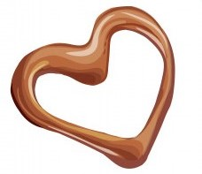
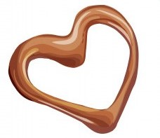

טרייפל מילקי
טרייפל מילקי הוא הגשמת חלום ילדות קינוחי קרם שלושה שוקולדים בשכבות שמכינים מתערובת מהירה אחת.
הוסיפו את הקצפת של מילקי מעל לקינוח מילקי מושלם.
מצרכים
לטרייפל:
80 גרם שוקולד מריר, קצוץ
100 גרם שוקולד חלב, קצוץ
100 גרם שוקולד לבן, קצוץ
240 מ"ל (כוס) חלב
250 גרם (גביע) שמנת להקצפה 38%
6 חלמונים
20 גרם (2 כפות) סוכר
רבע כפית מלח
50 גרם חמאה, רכה
לעיטור:
360 מ"ל (כוס וחצי) שמנת להקצפה 38% שומן
30 גרם (רבע כוס) אבקת סוכר מנופה
2 כפיות אינסטנט פודינג וניל
אופן ההכנה:
- מכינים על משטח העבודה 3 קערות בינוניות, מוסיפים לכל קערה שוקולד קצוץ אחר: שוקולד מריר, שוקולד חלב ושוקולד לבן.
- בסיר בינוני-קטן מביאים לרתיחה את החלב והשמנת, במקביל טורפים בקערה את החלמונים עם הסוכר והמלח.
-
יוצקים מחצית מהחלב הרותח לקערת החלמונים בזרם דק תוך כדי עירבוב. יוצקים את התערובת חזרה
לסיר ומבשלים תוך טריפה רצופה על להבה נמוכה עד שהתערובת מראה סימני בעבוע קלים.
- יוצקים לכל אחת מקערות השוקולד שליש מהתערובת החמה, מניחים לשוקולדים לשבת ולהינמס קלות ומערבבים לקרם חלק.
- מוסיפים לקערת השוקולד הלבן מחצית מכמות החמאה, מערבבים לקרם חלק. מוסיפים את יתרת החמאה לקערת שוקולד החלב, מערבבים לקרם חלק.
- יוצקים לכוסות הגשה שכבה דקה של קרם שוקולד מריר ומקפיאים לחצי שעה להתייצבות.
- יוצקים מעל לקרם המריר שכבה של קרם שוקולד חלב ומקפיאים לשעה נוספת.
- יוצקים מעל לקרם המריר שכבה של קרם שוקולד חלב ומקפיאים לשעה נוספת.
- מקציפים במערבל חשמלי את הקצפת של מילקי עם אינסטנט פודינג לקצפת יציבה ומעטרים את הקינוחים בתלוליות קצפת גדולות בעזרת שקית זילוף.
הטיפ שלנו
הטרייפל נשמר במקרר עד 4 ימים.
 
